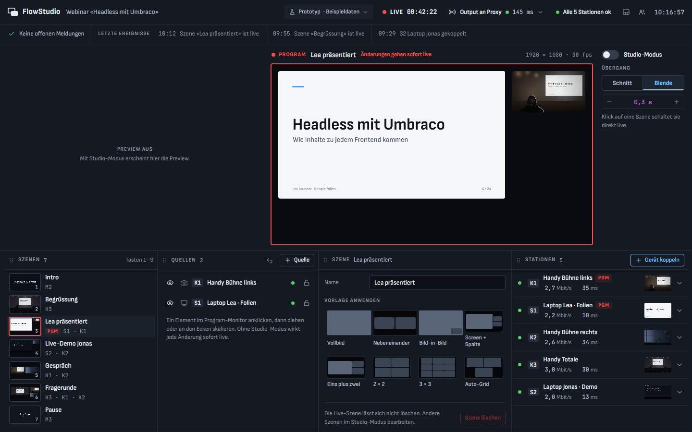
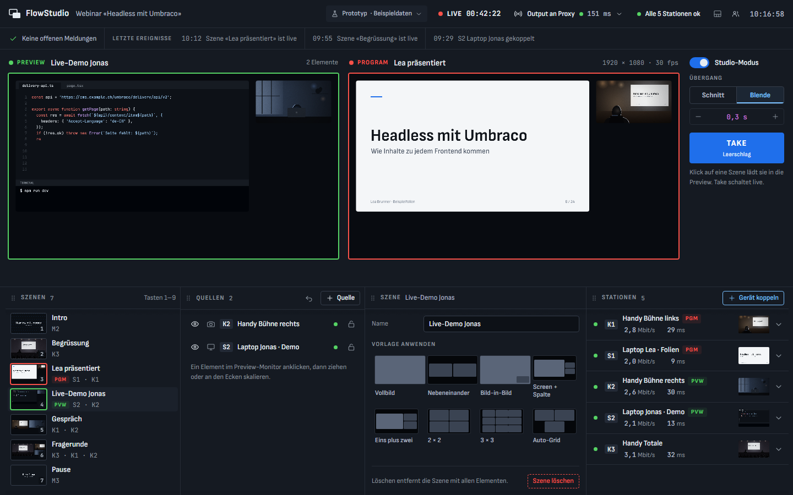
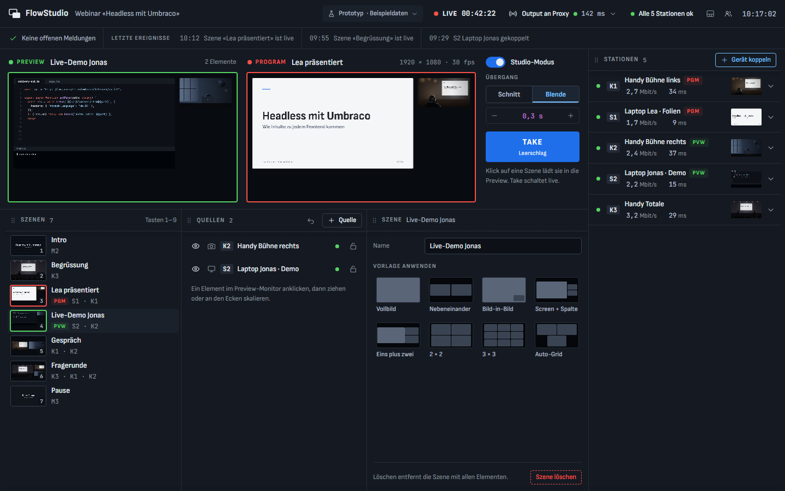

Medien
WebRTC von der Kamera bis zum Output
Nur WebRTC bringt Bild im Browser deutlich unter eine Sekunde. HLS und RTMP kommen höchstens später dazu, für Restreams.
Architektur & Plan · Entwurf 2 · 22. Oktober 2026
Eine Web-Regie nach dem Vorbild von OBS: Handys und Laptops senden Kamera und Bildschirm direkt aus dem Browser. Im Studio stellst du daraus Szenen zusammen, und ein 16:9-Output läuft als iframe beim Proxy, der das Bild verteilt. Alles läuft in einem Docker-Compose-Stack auf eurem eigenen Server.
Neu in Entwurf 2: alles in einem Docker-Compose-Stack mit Volumes statt Azure, Login über ein Admin-Konto aus appsettings, Laptops koppeln per Kurz-URL und Freigabe, Output an einen Proxy statt direkt ans Publikum, Ton bleibt extern. Die Regie-Oberfläche ist mit Impeccable als klickbarer Prototyp entworfen und nach deinem Feedback überarbeitet: Studio-Modus zum Ein- und Ausschalten wie bei OBS, Szenen unten neben den Quellen, eine durchgehende Fläche ohne Kästen und Rahmen, kein T-Bar, und alle Docks lassen sich frei anordnen und in der Grösse ändern (Abschnitt 3).
Medien
Nur WebRTC bringt Bild im Browser deutlich unter eine Sekunde. HLS und RTMP kommen höchstens später dazu, für Restreams.
Betrieb
docker compose up -d startet HTTPS-Proxy, API, LiveKit und Datenbank. Alle Daten liegen in Volumes, es gibt keine Cloud-Dienste.
Server
Leitet Pakete nur weiter, statt sie neu zu kodieren. Simulcast, Reconnect und Token-Rechte sind eingebaut. Open Source unter Apache 2.0.
Rendering
Regie-Monitore und Output-Seite nutzen denselben Szenen-Renderer. Was der Program-Monitor zeigt, kommt genau so raus.
Sicherheit
Der Output geht an einen Abnehmer, den Proxy, über einen geheimen, sperrbaren Link. Öffnen Zuschauer die Seite später selbst, kommt der Air-Modus dazu: Dann sehen sie nur den fertigen Program-Stream.
Stabilität
Resume, Rejoin, Warten mit Backoff. Jedes Gerät behält seine Identität und landet nach einem Unterbruch wieder im selben Slot der Szene.
Zwei Ebenen, sauber getrennt. Die Media-Plane transportiert Bild und Ton über LiveKit. Die Control-Plane, also die FlowStudio-API, entscheidet, wer was darf und welche Szene läuft. Beides läuft im selben Docker-Compose-Stack, im selben WLAN wie die Geräte.
Seitlich wischen, um die ganze Abbildung zu sehen.
Seitlich wischen, um die ganze Abbildung zu sehen.
Seitlich wischen, um die ganze Abbildung zu sehen.
| Container / Teil | Aufgabe | Technik |
|---|---|---|
| caddy | HTTPS mit Zertifikat, liefert Regie, Sender und Output aus, leitet an API und LiveKit weiter | Caddy mit DNS-Modul, Frontends beim Build eingebaut |
| api | Login, Pairing, Tokens, Szenen-Zustand, Uploads, Webhooks | ASP.NET Core (.NET 10), SignalR, EF Core |
| livekit | Medien weiterleiten, Simulcast | LiveKit (Open Source) |
| postgres | Szenen, Geräte, Produktionen, Audit-Log | PostgreSQL 17 |
| Regie | Szenen bauen und schalten, Studio-Modus mit Preview und Take, Stationen, Geräte koppeln | Angular (Signals, OnPush), gemeinsamer Renderer |
| Sender-PWA | Kamera und Screens senden, Tally anzeigen | Angular-PWA, livekit-client, Wake-Lock |
| Output-Seite | 16:9-Program für den Proxy, ohne Bedienelemente | Vanilla TypeScript mit Vite, ohne Framework |
Gestartet wird mit zwei Schritten: ./setup.sh legt die .env mit zufälligen Secrets an und fragt Domain, Server-IP und Admin-Konto ab, danach startet docker compose up -d alles. Beim ersten Start legt die API die Datenbank an und erstellt die Standard-Produktion. Danach ist die Regie unter der Domain erreichbar.
# docker-compose.yml (Skizze)
services:
caddy:
build: ./infra/caddy # Caddy + DNS-Modul + gebaute Frontends
ports: ["80:80", "443:443"]
env_file: .env
volumes: [caddy_data:/data, caddy_config:/config]
restart: unless-stopped
api:
build: ./apps/api
env_file: .env # ADMIN__USERNAME, ADMIN__PASSWORD, Secrets
volumes: [media:/data/media, keys:/data/keys]
depends_on: [postgres]
restart: unless-stopped
livekit:
image: livekit/livekit-server
command: --config /etc/livekit.yaml --node-ip ${FLOWSTUDIO_NODE_IP}
ports: ["7881:7881", "7882:7882/udp"] # Medien direkt, nicht über Caddy
environment:
LIVEKIT_KEYS: "${LIVEKIT_API_KEY}: ${LIVEKIT_API_SECRET}"
volumes: [./infra/livekit.yaml:/etc/livekit.yaml:ro]
restart: unless-stopped
postgres:
image: postgres:17
env_file: .env
volumes: [pgdata:/var/lib/postgresql/data]
restart: unless-stopped
volumes: { caddy_data: {}, caddy_config: {}, media: {}, keys: {}, pgdata: {} }FLOWSTUDIO_NODE_IP ist die Adresse des Rechners im WLAN; die gibt LiveKit den Geräten für das Bild weiter.flowstudio.opten.ch, die per DNS auf die interne IP zeigt; Caddy holt das Zertifikat per DNS-Challenge bei Let's Encrypt. Dann vertrauen alle Handys und Laptops dem Zertifikat ohne Installation. Für einen schnellen Test geht ein lokales Zertifikat, das muss aber auf jedem Gerät installiert werden../backup.sh sichert die Datenbank (pg_dump) und das Medien-Volume in einen Ordner mit Datum.git pull und docker compose up -d --build, nie während einer Produktion. Volumes bleiben erhalten.egress und redis dazu, für den Air-Modus der renderer.Glass-to-Glass heisst: vom Licht auf dem Kamerasensor bis zum Pixel beim Abnehmer. Vor Ort im eigenen WLAN fällt der Weg übers Internet weg. Die Zeit steckt dann fast nur noch in Aufnahme und Puffern.
| Abschnitt | Was passiert | Output vor Ort | Air-Modus |
|---|---|---|---|
| Aufnahme & Encode | ein Kamera-Frame (33 ms bei 30 fps) plus Hardware-Encoder | 45 ms | 45 ms |
| Netzwerk | WLAN vor Ort: Upload zur SFU und Download zum Abnehmer | 25 ms | 30 ms |
| Server | SFU leitet weiter; im Air-Modus zusätzlich der Renderer (Puffer, Mischen, Encode) | 5 ms | 90 ms |
| Wiedergabe | Jitter-Buffer (im WLAN etwas grösser), Decode, Anzeige | 75 ms | 75 ms |
| Total | Glass-to-Glass | ≈ 150 ms | ≈ 240 ms |
Schätzwerte im eigenen WLAN bei 30 fps (1 Frame = 33 ms). Phase 0 misst sie echt. Was der Proxy danach an Verzögerung dazufügt, liegt ausserhalb von FlowStudio.
jitterBufferTarget in Chromium). Für den Output etwas grösser, damit das Bild ruhig bleibt.contentHint = "detail": Schärfe vor Bildrate. Kameras mit "motion": flüssig vor scharf.<video>-Elemente, platziert per CSS-Transform. Kein Kopieren von Frames in ein Canvas.Die Begriffe kommen von OBS, damit sich alle sofort zurechtfinden. Eine Szene ist eine geordnete Liste von Elementen auf einem festen Canvas von 1920 × 1080 Pixeln, und jedes Element zeigt eine Quelle.
| In OBS | In FlowStudio | Was es kann |
|---|---|---|
| Szene | Szene | geordnete Elemente auf festem 1920 × 1080-Canvas |
| Quelle | Quelle | Kamera oder Screen eines Geräts, Bild, Video; später Text, Ton, Webseite, andere Szene |
| Szenenelement | Element | Position, Grösse, Crop, Fit, Ecken, Rahmen, Ebene, Fallback |
| Studio-Modus | Studio-Modus | ein- und ausschaltbar: aus geht eine Szene mit einem Klick live, an kommen Preview und Take dazu |
| Übergänge | Übergang | Schnitt oder Blende mit fester Dauer, die immer ganz durchläuft; kein T-Bar, Stinger später |
| Docks | Docks | frei anordnen (unten, links, rechts), Grösse an den Trennlinien ziehen, ein- und ausblenden; das Layout bleibt gespeichert |
| Basis-Auflösung | Canvas | fix 1920 × 1080, der Output skaliert verlustfrei auf jede 16:9-Fläche |
| Szenensammlung | Produktion | ein Event mit eigenen Geräten, Szenen und Outputs |
| Audio-Mixer | später | Ton läuft heute extern; Pegel, Mute und Sync-Versatz sind vorbereitet |
Eine Vorlage legt Slots an, und du ziehst Quellen per Drag & Drop hinein. Danach ist jedes Element frei veränderbar.
ScreenKamera
Die Oberfläche ist mit Impeccable entworfen und als klickbarer Prototyp umgesetzt, ausgelegt für einen 14–16-Zoll-Laptop bei normalem Raumlicht. Zwei Dinge haben Vorrang: Ein Ausfall darf nie unbemerkt bleiben, und das Einrichten vor dem Webinar muss schnell gehen.
Studio-Modus aus (Standard)

Studio-Modus an

Docks umgestellt: Stationen rechts angedockt

Prototyp öffnen · mit Studio-Modus: #studio · mit umgestellten Docks: #docks · mit Störungen: #stoerung · mit offener Kopplung: #koppeln. Im Prototyp spielt das Menü «Prototyp» Störungen und eine Kopplungsanfrage auch von Hand ab.
Jede Szene ist ein JSON-Dokument. Die API prüft jede Änderung und vergibt eine fortlaufende Version, über die sich beide Regie-Arbeitsplätze und die Output-Seite abgleichen. Produktionen tragen eine Mandanten-ID (heute nur «opten»), damit FlowStudio später mandantenfähig wird, ohne das Modell umzubauen.
{
"id": "scn_screen_cam",
"name": "Screen + Kamera",
"canvas": { "w": 1920, "h": 1080 },
"background": { "type": "image", "asset": "ast_bg_q4" },
"items": [
{
"id": "it_screen",
"source": "dev_laptop_anna/screen-1",
"x": 40, "y": 40, "w": 1360, "h": 765, "z": 1,
"fit": "contain", "crop": [0, 0, 0, 0], "radius": 12,
"onLost": { "holdMs": 3000, "then": "src_slate_pause" }
},
{
"id": "it_cam",
"source": "dev_handy_a/camera",
"x": 1440, "y": 40, "w": 440, "h": 248, "z": 2,
"fit": "cover", "mirror": false
}
]
}Quellen werden über Geräte-ID und Slot referenziert (dev_handy_a/camera), nicht über LiveKit-Track-IDs. Track-IDs ändern sich bei jedem Reconnect, Geräte-ID und Slot bleiben. Deshalb landet ein Bild nach einem Unterbruch automatisch wieder an derselben Stelle.
Sender brauchen weder App noch Konto. Je nach Gerät gibt es drei Wege, es mit der Regie zu koppeln. Alle enden gleich: Das Gerät bekommt einen eigenen Schlüssel, den die Regie jederzeit sperren kann.
| Weg | Für | Ablauf |
|---|---|---|
| QR-Code | Handys | Die Regie zeigt einen QR-Code, das Handy scannt ihn mit der Kamera-App, fertig. |
| Kurz-URL und Freigabe | Laptops vor Ort | Adresse eintippen, Namen eingeben, die Regie gibt mit einem vierstelligen Prüfcode frei. |
| Einladungslink | Laptops, auch vorab | Die Regie kopiert einen Link und schickt ihn per Teams oder Mail; einmal gültig, 30 Minuten lang. |
Adresse öffnenDie Kurz-URL eintippen oder den Einladungslink anklicken, dann einen Namen für das Gerät eingeben.
Prüfcode erscheintDer Laptop zeigt einen vierstelligen Code und wartet, bis die Regie ihn zulässt.
Regie gibt freiStimmt der Code auf beiden Bildschirmen überein, klickt die Regie auf «Zulassen».
Bildschirm teilenEin Klick, der Browser fragt nach Bildschirm oder Fenster. Beim nächsten Mal erkennt FlowStudio den Laptop wieder.
Die Freigabe ist der Schutz: Wer im WLAN die Adresse kennt, kann nur anklopfen. Erst die Regie lässt ein Gerät zu, und der Prüfcode verhindert, dass sie aus Versehen das falsche freigibt.
Bandbreite als Richtwert: pro Handy 3–5 Mbit/s Upload, pro Screen 2–4 Mbit/s. Bei vier Handys und zwei Screens sind das rund 25 Mbit/s im WLAN, dazu der Empfang durch Regie und Output. Ein eigenes 5-GHz-Netz für die Geräte und Kabel für Server und Regie-Laptop machen den Unterschied.
Die Output-Seite rendert einen festen Canvas von 1920 × 1080 Pixeln und skaliert ihn ohne Verzerrung in jeden Container. Heute nimmt sie genau ein Abnehmer ab: der Proxy, der das Bild an rund 30 Personen verteilt.
| Output | Für wen | Weg | Latenz | Abnehmer |
|---|---|---|---|---|
| Output-Seite | Proxy, OBS-Browserquelle, Regie-Monitor | komponiert selbst aus dem Backstage-Raum, geheimer und sperrbarer Link | ≈ 0,15 s | einer bis wenige |
| Air-Modus optional | Zuschauer, die die Seite selbst öffnen | Renderer mischt, 1 Program-Stream aus dem Air-Raum | ≈ 0,25 s | Hunderte |
| Restream & Aufnahme später | YouTube, LinkedIn, Vimeo, MP4-Datei | LiveKit Egress vom Program-Track | 2–10 s und mehr | so viele, wie die Plattform trägt |
Annahme: Der Proxy öffnet die Output-Seite einmal und verteilt das Bild selbst. Öffnen die rund 30 Personen die Seite jeweils selbst, schalten wir den Air-Modus ein, damit niemand an Quellen kommt, die gerade nicht live sind.
?bg=transparent für Overlays in OBS oder vMix, ?debug=1 blendet Bitrate, Auflösung und Latenz ein.<iframe
src="https://flowstudio.opten.ch/o/webinar-q4?k=…"
title="Webinar Q4 live"
allow="autoplay; fullscreen"
allowfullscreen
style="width:100%; aspect-ratio:16/9; border:0"></iframe>Beispiel-URL. Der Schlüssel k im Link ist geheim und gibt das Bild frei; einbetten lässt sich die Seite nur auf freigegebenen Domains (siehe Sicherheit).
Unterbrüche passieren: Das WLAN wechselt, ein Handy wird warm, jemand lädt die Seite neu. Das Ziel ist, dass beim Proxy davon höchstens ein kurzes Standbild ankommt und die Regie jeden Ausfall sofort sieht.
Seitlich wischen, um die ganze Abbildung zu sehen.
restart: unless-stopped und Healthchecks; die Daten in den Volumes überstehen jeden Neustart. Während einer Produktion gibt es keine Updates.| Ereignis | FlowStudio reagiert | Beim Proxy kommt an |
|---|---|---|
| Handy verliert kurz das WLAN | ICE-Restart, die Session bleibt; die Station blinkt in der Regie | kurzes Standbild, ≈ 1–3 s |
| Handy ist 30 s ohne Netz | verbindet ohne Limit neu; die Regie zeigt «verbindet neu · 00:30», bis jemand es bestätigt | Standbild, dann Fallback oder Slate |
| Anruf oder andere App belegt die Kamera | Kamera neu anfordern und neu publizieren | Standbild, dann wieder live |
| Sender-Seite wird neu geladen | gleiche Geräte-ID, gleicher Slot, Auto-Start | kurzes Standbild |
| Jemand beendet sein Screen-Sharing | Regie wird gewarnt, der Sender zeigt «Erneut teilen» | Fallback der Kachel |
| WLAN ist überlastet | Simulcast senkt die Stufen; die Regie zeigt Paketverlust und Bitrate pro Station | etwas weniger scharf, kein Hänger |
| Der Regie-Browser stürzt ab | Output läuft weiter, er hängt nicht am Regie-Browser | nichts |
| API-Neustart oder Update | SignalR verbindet neu, Zustand per Version abgeglichen | nichts |
| Ein Container stürzt ab | Docker startet ihn neu, alle Clients verbinden sich selbst neu | Standbild, einige Sekunden |
| Der ganze Server startet neu | alle Container starten automatisch, alle Geräte kommen von selbst zurück | Unterbruch, bis der Server wieder da ist |
| Gerät in einem zweiten Tab geöffnet | der alte Tab wird getrennt und bleibt aus, kein Ping-Pong | nichts |
// packages/media-client: gleiche Logik in Sender, Regie und Output
const INTENTIONAL = [
DisconnectReason.CLIENT_INITIATED,
DisconnectReason.PARTICIPANT_REMOVED, // gekickt oder gesperrt
DisconnectReason.DUPLICATE_IDENTITY, // gleiches Gerät in zweitem Tab
];
const room = new Room({
dynacast: true, // ungenutzte Simulcast-Stufen beim Sender pausieren
adaptiveStream: !isOutput, // die Output-Seite wählt die Stufe selbst aus der Szene
reconnectPolicy: { // nie aufgeben: 0,3 s, 0,6 s, 1,2 s … max. 5 s
nextRetryDelayInMs: ({ retryCount }) =>
Math.min(5_000, 300 * 2 ** retryCount) + Math.random() * 250,
},
});
room.on(RoomEvent.Disconnected, (reason) => {
if (!INTENTIONAL.includes(reason)) rejoin(); // frisches Token, gleiche Identität
});
window.addEventListener('online', () => {
if (room.state === ConnectionState.Disconnected) rejoin(); // nicht auf den Timer warten
});
cameraTrack.mediaStreamTrack.addEventListener('ended', reacquireCamera);Der Output geht heute an genau einen Abnehmer. Ihn schützt ein geheimer Link, den die Regie jederzeit neu erzeugen kann, auf Wunsch zusätzlich beschränkt auf die IP des Proxys.
Die Output-Seite darf alle Quellen im Backstage-Raum abonnieren, denn sie setzt die Szenen selbst zusammen. Das ist in Ordnung, solange nur der Proxy sie öffnet. Würden Zuschauer die Seite direkt aufrufen, könnten sie auch Kameras und Screens sehen, die gerade nicht live sind, etwa den Bildschirm einer Sprecherin, die noch ihre Mails offen hat. Für diesen Fall ist der Air-Modus vorbereitet: Zuschauer kommen dann nur noch an den fertigen Program-Stream.
| Rolle | Anmeldung | Darf senden | Darf empfangen | Für andere sichtbar |
|---|---|---|---|---|
| Regie | Admin-Konto aus appsettings bzw. .env | Steuerdaten | alle Quellen | nein |
| Sender-Gerät | QR-Code, Prüfcode mit Freigabe oder Einladungslink | nur die eigenen Slots: Kamera, Screen | nichts, optional Rückbild | ja, in der Regie |
| Output-Seite | geheimer Link, optional IP-Sperre | nichts | Quellen der Szenen | nein |
| Renderer Air | Dienst-Identität | 1 Program-Track, nur im Air-Raum | Quellen der Szenen | nein |
| Zuschauer Air | öffentliche Output-ID mit Origin-Check | nichts | nur den Program-Track | nein |
.env; auf dem VPS als Hash statt Klartext. Login-Cookie mit HttpOnly, Secure und SameSite=Strict, nach fünf Fehlversuchen 15 Minuten Sperre. Die Schlüssel liegen im Volume, damit Logins Neustarts überstehen.frame-ancestors erlaubt das Einbetten nur auf freigegebenen Domains..env kommt nie ins Git; ./setup.sh erzeugt zufällige Secrets. Standardmässig wird nichts aufgezeichnet.Wo es passt, bleiben wir beim OPTEN-Stack mit .NET im Backend und Angular im Frontend. Nur die Output-Seite verzichtet auf ein Framework, weil dort jede Millisekunde Ladezeit zählt.
| Bereich | Wahl | Warum |
|---|---|---|
| Medien | LiveKit (Open Source) mit livekit-client | Simulcast, Dynacast, Reconnect und Token-Rechte; Egress und Ingress für später |
| Backend | ASP.NET Core (.NET 10 LTS), SignalR mit MessagePack, EF Core | OPTEN-Stack, Echtzeit mit Auto-Reconnect |
| Regie und Sender | Angular (Standalone, Signals, OnPush), Sender als PWA | OPTEN-Standard; die Regie ist eine grosse App |
| Schriften und Assets | im eigenen Build, ausgeliefert von Caddy | die Regie läuft im LAN; keine Abhängigkeit von Google Fonts oder anderen CDNs |
| Output | Vanilla TypeScript mit Vite | kleinste Ladezeit im iframe |
| Datenbank | PostgreSQL 17 im Container | klein, frei, ein Volume, guter EF-Core-Treiber |
| Dateien | Docker-Volume, ausgeliefert über die API | kein Blob-Speicher nötig |
| HTTPS | Caddy mit automatischen Zertifikaten | ein Container für TLS und Weiterleitung |
| Login | Admin-Konto aus appsettings bzw. .env | reicht für eine bis zwei Personen in der Regie |
| Betrieb | Docker Compose, lokal oder auf einem Linux-Server | ein Befehl startet alles |
| Monitoring | Healthchecks und docker compose logs; später Prometheus und Grafana | reicht für einen Server |
flowstudio/
├─ apps/
│ ├─ api/ ASP.NET Core: REST, SignalR-Hub, Tokens, Webhooks
│ ├─ studio/ Angular: Regie
│ ├─ sender/ Angular-PWA: Kamera, Screens
│ └─ output/ Vanilla TS: Output-Seite
├─ packages/
│ ├─ scene-model/ Szenen-Typen und Validierung, aus der API generiert
│ ├─ scene-renderer/ Renderer ohne Framework für Regie und Output
│ └─ media-client/ Hülle um livekit-client: Reconnect, Stats, Tally
├─ prototype/ klickbarer Regie-Entwurf (Impeccable)
├─ infra/
│ ├─ caddy/ Caddyfile, Dockerfile mit DNS-Modul
│ └─ livekit.yaml
├─ docker-compose.yml
├─ .env.example ohne Secrets, ./setup.sh füllt die echte .env
├─ setup.sh · backup.sh
└─ PRODUCT.md · DESIGN.mdJede Phase endet mit etwas, das man live ausprobieren kann. Phase 0 klärt die technischen Risiken, bevor viel Code entsteht.
Fertig, wenndocker compose up auf einem frischen Rechner läuft, Handys ohne Warnung senden, der Output unter 200 ms gemessen ist und ein Reconnect unter 3 s klappt.
Fertig, wennein internes Probe-Webinar mit drei Handys und zwei Laptops über den Proxy läuft.
Fertig, wenndas erste echte Webinar über FlowStudio gelaufen ist.
Der Rand leuchtet rot, wenn die Quelle live ist, und grün, wenn sie als Nächstes kommt. Sprecher wissen immer, ob sie im Bild sind.
Vor dem Start prüft der Sender Kamera, Netz und Bandbreite. Die Regie sieht eine Ampel pro Gerät.
Das Program mit rund 0,2 s Verzögerung auf einem zweiten Gerät oder direkt im Sender.
Kurze Nachrichten an einzelne Geräte, zum Beispiel «In 10 s live».
Eine Skizze des Raums zeigt, wo welches Handy steht. Platzcodes wie K1 oder S2 sind überall gleich.
Alle Quellen plus Preview und Program auf einem zweiten Monitor, mit Namen und Tally.
Name und Funktion, Countdown und Logo aus Vorlagen. Der Text bleibt scharf, weil er als HTML gerendert wird.
Szenen per Taste wechseln. Bitfocus Companion steuert FlowStudio über die REST-API.
Das Program als MP4, dazu jede Quelle einzeln für den Schnitt.
Zoom, Licht, Front/Rück und Auflösung aus der Regie, wo das Handy es unterstützt.
Wer gerade spricht, wird hervorgehoben oder bekommt automatisch seine Szene.
Chroma-Key im Renderer, Hintergrund-Unschärfe direkt auf dem Sender.
Deine Antworten vom 22. Oktober und was sie im Plan verändert haben.
| Thema | Antwort | Folge für den Plan |
|---|---|---|
| Zuschauer | rund 30 Personen über einen Proxy; für FlowStudio zählt ein Abnehmer | Output-Seite mit geheimem Link reicht; Air-Modus nur bei Bedarf |
| Ton | separat über ein Mischpult | kein Ton im MVP; Audio-Client und Mixer bleiben vorbereitet |
| Ort | alles vor Ort in einem WLAN | Server im selben Netz, HTTPS im WLAN, WLAN-Planung für die Geräte |
| Hosting | lokal per Docker oder VPS im Betrieb | ein Compose-Stack, Daten in Volumes, keine Cloud-Dienste |
| Login | Admin-Benutzer und Passwort in appsettings | kein Entra ID; Hash empfohlen, Sperre nach Fehlversuchen |
| Mandanten | nur OPTEN, Mandantenfähigkeit andenken | Mandanten-ID im Datenmodell, Oberfläche ohne Mandantenwahl |
| Restream, Aufnahme | später | Phase 3, dann mit Egress-Container |
| Personen in der Regie | meist eine, höchstens zwei | ein Admin-Konto, mehrere Sitzungen, Änderungen live synchron |
| Regieplatz | Laptop bei normalem Raumlicht | Regie-Entwurf für 14–16 Zoll als dunkle Konsole, gewählt in der Entscheidungsrunde |
| Regie-Layout | keine Kästen mit Lücken, kein Rahmen aussen; Szenen unten neben den Quellen | eine durchgehende Fläche mit Haarlinien, Docks unten wie bei OBS |
| Preview | überspringbar wie der Studio-Modus von OBS | Studio-Modus als Schalter, Standard aus: eine Szene geht mit einem Klick live |
| Blende | kein T-Bar, eine Blende bleibt nie halb stehen | Schnitt oder Blende mit fester Dauer, ausgelöst per Szenenklick oder Take |
| Arbeitsfläche | Grösse und Anordnung von Quellen, Stationen, Preview usw. selbst einstellen | Docks wie bei OBS verschieb- und skalierbar, Layout pro Browser gespeichert und zurücksetzbar |
flowstudio.opten.ch und einen API-Token des DNS-Anbieters für die DNS-Challenge.